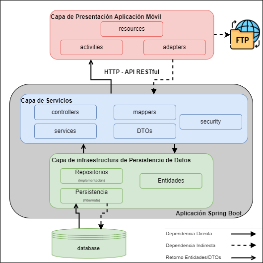
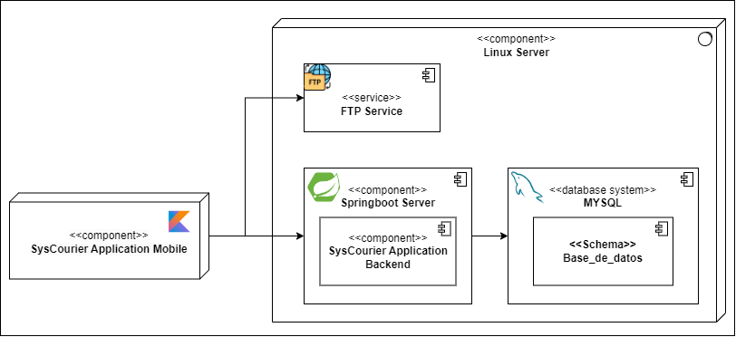

SysCourier - Sistema de información para el seguimiento de mensajería

Este proyecto de grado desarrolla una aplicación móvil para Android destinada a mejorar la eficiencia y agilidad del servicio de transporte de paquetería en Data System Company. Implementando la metodología Kanban, se identificaron las necesidades del cliente y se construyó SysCourier, una solución validada positivamente por los mensajeros. El proyecto incluyó la estimación de requerimientos, el diseño de un modelo de negocios y la evaluación del impacto del sistema, resultando en una herramienta clave para optimizar las operaciones de mensajería de la empresa.
Data System Company
Data System Company es una empresa de logística y mensajería que ofrece servicios a nivel nacional para el transporte de productos. Legalmente constituida, la empresa se especializa en implementar soluciones tecnológicas que optimizan la logística integral en diversos sectores económicos. Actualmente, cuenta con aproximadamente 10 mensajeros motorizados y utiliza herramientas digitales de terceros para procesos como empaquetamiento, alistamiento y envío, además de monitoreo y almacenamiento de información en dispositivos Android.
Diagrama de Arquitectura
La arquitectura de la aplicación está organizada en capas. La capa de presentación es la aplicación móvil, que interactúa con la capa de servicios de la aplicación y con un servicio FTP para la carga de comprobantes al servidor de Data System Company. La capa de aplicación es una aplicación desarrollada en Spring Boot, donde se ubica la capa de servicios, encargada de ofrecer servicios web a la aplicación móvil. Además, está la capa de infraestructura de persistencia de datos, que gestiona las operaciones con la base de datos proporcionada por la empresa beneficiaria y modificada por el equipo de desarrollo. Finalmente, se encuentra la base de datos.
Diagrama de Despliegue
En este diagrama se evidencian los componentes principales del sistema. La aplicación móvil, desarrollada en Kotlin, utiliza los servicios ofrecidos por la aplicación Spring Boot y el servicio FTP, ambos alojados en un servidor Linux. La aplicación Spring Boot (backend) se conecta a la base de datos MySQL, que también se encuentra en el mismo servidor Linux.